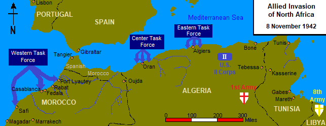

Dwight D. Eisenhower
The Supreme comander of The allied armies on the western front.Eisenhower was specifically chosen by president Franklin D. Roosevelt because he was a excellent organizer and above all,a diplomat. during operation Torch,The plan to push Germany out of Africa by landing in Vichy France. Eisenhower was able to negotiate with The Vichy commader Darlan to let allied forces to land without any resistance. After a short skirmish on the coast,The Vichy French troops let the allied troops in and sucessfully push Germany out of Africa.
In 1944,Eisenhower was able to organize and unite a coalition army made up of 5 million troops from 16 different nation for the invasion of Germany-occupied France and got everyone to argee to the plan. On June 6th with The German still believing that the attack would come at Calais,The Allied forces invaded and overrun the German army in Normandy and gain a foothold of France for all the reinforcements to come in.
.jpeg)
with The German Ardennes offensive reppelled and the siztkrieg line penetrated. Germany's capitulation was inevitable, but the allies are trying to take as much ground as possible before the Soviets can spead communism to its occupied nations. Montgomery wanted to do a thrust to Berlin and met the advancing Soviets before destroying pockets of resistance behind its line,this way they could take as much ground as possible and reach Berlin before The Soviets can. But Eisenhower believed that the operation was too risky as the German could easliy couter-attack and encircle the thrust just like Montgomery's previous attempt of operation market garden. Patton while less hubristic but equally bold argues that a risky thrust could be avoid if they strike quickly and encircle the enemy forces along the way. But The supreme commander Eisenhower rejected both ideas and decided on a less risky strategy of pushing and straighten the front and advance slowly and carefully along the whole front. This angered both Patton and Montgomery and they left the room,but Germany's capitulation came in 5 months where Eisenhower would intefere in the Nuremberg trial against several war criminals. Eisenhower would become president of the United states in 1953.